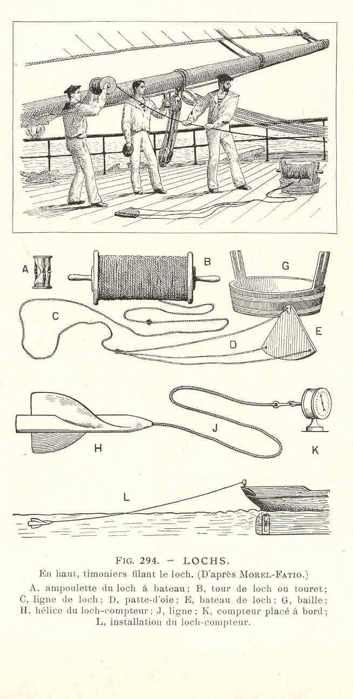
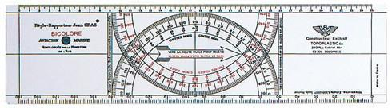
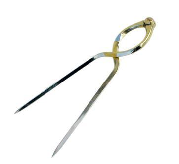
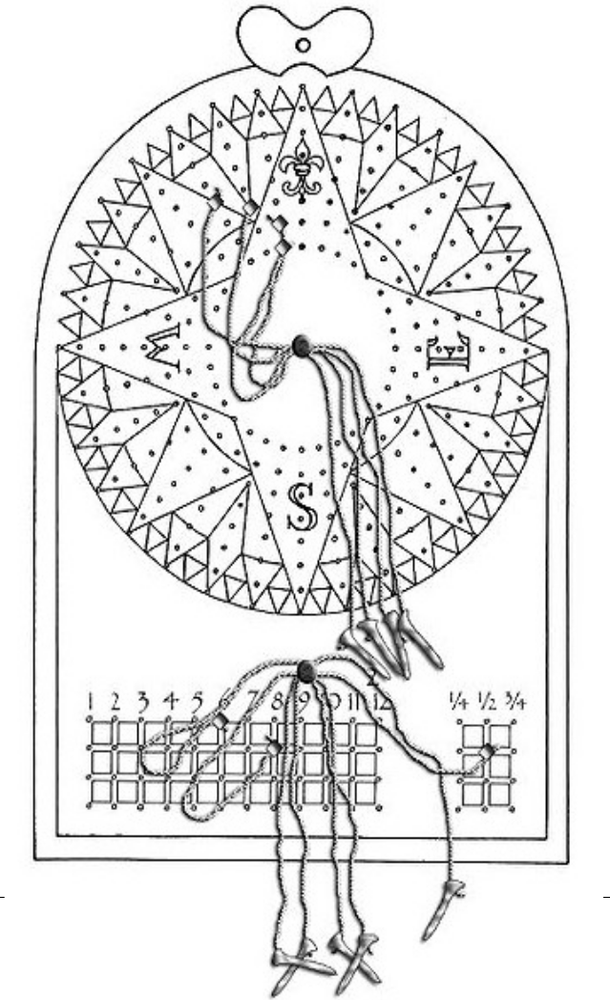
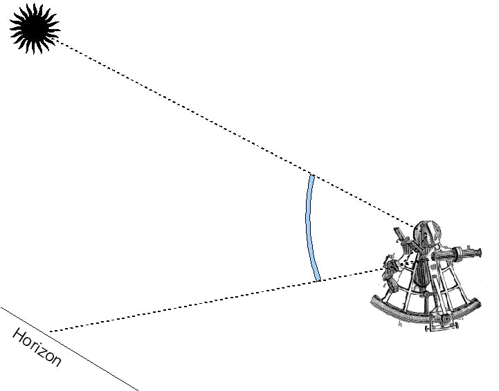
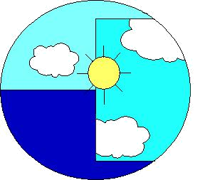
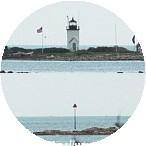
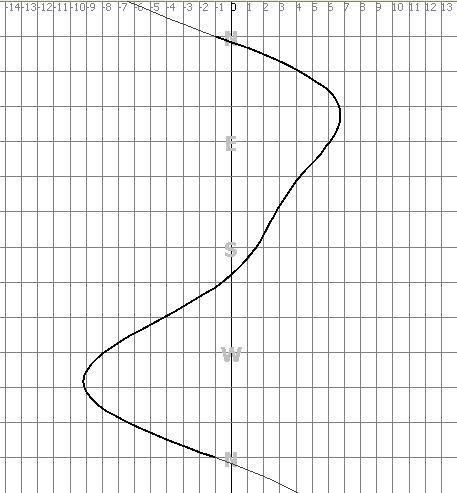

Il s'agit de pouvoir continuer à naviguer sereinement – à savoir où on est, à savoir où on va,
et à savoir ce qu'il faut faire pour aller là où on veut aller – même quand les batteries sont à plat,
et que les piles sont mortes.
Et ce même si il fait nuit, qu'on est au près, que la météo répète qu'il y a un avis de
coup de vent (qu'on n'entend pas, puisque les piles sont mortes, disais-je), qu'il va bientôt neiger, et que tout le monde a la gerbe.
C'est de toute évidence de la pure fiction, mais on a le droit d'y croire, et on y croit !
Le monde a été découvert à la voile, sans électricité,
les techniques à mettre en œuvre sont d'autant mieux connues qu'elles ont longtemps été les seules disponibles. Un des objectifs de ce document est aussi de les préserver,
de ne pas les laisser s'oublier, de ne pas les perdre, ce serait vraiment trop bête.
D'autant que la sécurité en mer – comme ailleurs - échappe totalement à la mode et à l'actualité.
On évoquera ici des outils et les techniques qui permettent de les mettre en œuvre,
tant en ce qui concerne leur utilisation que la façon d'exploiter les données qu'ils mesurent.
Par contre, on passera rapidement sur la façon d'utiliser un compas de relèvement,
on ne parlera guère de la façon dont on se sert d'un sextant...
Ce document est plus un aide-mémoire quant à la manière d'effectuer les divers
calculs qui découlent de l'utilisation des instruments de navigation.
Donc :
Ce document n'a pas la prétention d'être un cours de navigation.
C'est tout au plus un aide-mémoire.
En avant.
Avant de disposer d'aides électroniques à la navigation, on naviguait à l'estime.
Le principe de la navigation à l'estime est le suivant :
On part d'un point connu, et on tâche de tenir compte de tous les facteurs qui déplacent le navire, comme sa vitesse et son cap,
sa dérive, le courant, etc. Ceci permet d'obtenir une position estimée à n'importe quel moment.
à chaque fois que c'est possible, on recale son estime en faisant un point. En fonction de l'endroit où on se trouve, à savoir en vue ou hors de vue des côtes, les méthodes
de point seront différentes, et évoquées plus avant dans ce document.
Pour faire court, la clef d'une estime correcte tient en deux points :
- La connaissance des facteurs qui déplacent le bateau.
- La qualité des points qu'on fait pour recaler l'estime.
Pour tenir son estime, il faut pouvoir :
- Mesurer la route (sa direction)
- Mesurer la distance parcourue
Pour mesurer la distance parcourue, on a longtemps mesuré la vitesse du bateau, et calculé la distance parcourue d'après le temps passé à une vitesse donnée, ce qui implique de pouvoir aussi mesurer le temps.
On verra – notamment dans la section dédiée à la navigation astronomique – que la mesure du temps est un problème critique et important, non pas tant pour la tenue de l'estime, que pour la recaler.
On peut répartir les différents instruments de navigation en plusieurs catégories :
-
Les cartes et les outils associés
- cartes
- canevas
- rapporteurs
- pointes sèches
-
Les instruments nécessaires pour mesurer la route
- compas de route
- lochs
- tables de courant et de marée
-
Les instruments nécessaires pour mesurer le temps
- sabliers, clepsydres (<- mais non ! Pas sur un bateau !)
- montres & chronomètres
-
Les instruments nécessaires pour recaler l'estime
- compas de relèvement
- sextant
- éphémérides, tables et abaques
Note:
On parle ici d'instruments. On pourrait aussi bien parler d'outils. Outils et instruments sont des accessoires
qu'on doit maîtriser pour s'en servir. Ce qui requiert souvent une phase d'apprentissage.
Il y a au moins une différence fondamentale entre un
outil et une
boîte noire.
L'outil fait ce qu'on lui demande. La boîte noire décide toute seule...
De plus, quand ce n'est pas l'outil qui décide, son utilisateur doit savoir ce qu'il fait, anticiper la valeur des mesures
qu'il fait, et des résultats qu'il trouve. Cette attitude décisive permet aussi de détecter rapidement les erreurs et les
aberrations, qui ne manqueront pas d'arriver.
Rien de nouveau ici. Tous les instruments mentionnés ici sont connus depuis au moins cent ans.
Certains peuvent être construits avec les moyens du bord. D'autres non.
Il demeure cependant probablement intéressant de mentionner de quels instruments il s'agit.
Allons-y.

Loch à bateau, loch à poisson.
Le rôle du loch n'est pas tant d'évaluer la vitesse du bateau, que la distance qu'il a parcourue.
étymologie du mot "loch"
Voici une origine supposée – et plausible – du mot "loch", qu'on prononce "lok".
Il viendrait du mot anglais "log", qui signifie "bûche". Le navigateur subtilisait une bûche
à la cambuse, et la laissait tomber à l'étrave du bateau. Ensuite, marchant sur le pont
vers l'arrière en suivant la bûche qui flotte le long du bord, et comptant les secondes en
marchant (un..., deux..., trois...), il savait en arrivant à l'arrière le temps que la bûche
avait mis à parcourir la longueur du bateau, qu'il connaissait.
Une simple règle-de-trois permettait alors de connaître la vitesse du bateau,
donnée essentielle à la tenue de l'estime. Cette donnée importante était consignée dans
le "Log Book", ainsi qu'on nomme le Livre de Bord en anglais.
(And whenever you "log in" to your favorite website, …what do you think you're doing, mmh?)
Le loch à bateau est une bûche, un peu plus élaborée.
Il est fait essentiellement d'une planche de bois – c'est elle le bateau, celle qu'on appelle le bateau du loch - à
laquelle est amarrée une ligne par une patte d'oie, de façon à ce qu'elle flotte verticalement.
La ligne comporte des nœuds à intervalles réguliers de 15,43 mètres. Elle est en général enroulée sur un touret.
Le principe de fonctionnement est le suivant : on mouille le loch en même temps qu'on retourne un sablier de 30 secondes,
et on laisse filer la ligne de son touret jusqu'à ce que tout le sable soit écoulé, après quoi on compte les nœuds
qui sont passés à l'eau, et on remonte le tout à bord.
30 secondes constituent la 120e partie d'une heure, 15,43 mètres la 120e partie d'un mille marin (de 1852 mètres).
C'est ainsi qu'on "file cinq nœuds et demi", et non pas qu'on "avance à cinq milles et demi à l'heure".
On a tous déjà entendu "cinq nœuds à l'heure". Pas de commentaire !..
Le loch à poisson est un instrument mécanique, plus élaboré, qui présente cet avantage d'enregistrer la distance parcourue.
Probablement inventé en Chine. C'est ce que les terriens appellent une boussole.
On utilise des compas de route, et des compas de relèvement.
Le compas de route est fixé au bateau, et posé dans l'axe de la "ligne de foi".
Le compas de relèvement se tient à la main.
Les compas magnétiques sont basés sur le champ magnétique terrestre.
Ils indiquent le nord (à l'inverse du compas chinois, qui indique le sud) magnétique, qui se déplace avec le temps, et qui n'est pas situé au même endroit que le nord géographique,
qui est celui des cartes.
Le cap compas fait l'objet de deux corrections pour restituer le cap vrai (cap géographique),
celui qui s'exprime par rapport au nord de la carte. On verra à ce sujet la section Tenue de l’Estime.
Le compas de relèvement est utilisé pour connaître l'angle que fait un amer vu du bateau avec le nord magnétique.
La correction de déviation n'est pas appliquée au compas de relèvement, on considère (parfois à tort) qu'il n'est pas sujet
aux masses magnétiques qui engendrent la déviation appliquée au compas de route. Les bateaux – en général des navires – pour
lesquels c'est faux utilisent plutôt un cercle de gisements. Le gisement est l'angle que fait un amer avec l'axe du bateau.
On aura le relèvement de l'amer en faisant intervenir le cap du bateau, et les corrections (déclinaison et déviation) qui s'imposent.
Les compas gyroscopiques ne sont pas sujets à ce genre de phénomènes magnétiques, mais ils consomment beaucoup d'énergie.
Les compas étaient autrefois divisés en 32 parties (le compas chinois est divisé en 24 parties) égales appelées "quarts" ; ils sont maintenant
gradués en degrés, de 0° à 360°, dans le sens des aiguilles d'une montre, le nord à 0°, l'est à 90°, le sud à 180° et l'ouest à 270°.
La carte est le plus important de tous les instruments de navigation.
De nombreux logiciels fournissent maintenant des cartes électroniques.
Les cartes en papier présentent cet inconvénient d'être chères et fragiles.
Elles présentent néanmoins l'avantage incontestable de ne jamais tomber en panne.
Moyennant le fait qu'on sait ce qu'on veut mesurer en matière d'angle, le plus simple des rapporteurs sera suffisant, pourvu qu'il soit gradué en degrés.
Certains, plus élaborés, seront plus pratiques. D'autres, plus sophistiqués, seront superflus.
Les Anglo-saxons utilisent des "règles parallèles", les autres des rapporteurs, plus ou moins élaborés. Il n'y a pas lieu de polémiquer, mais les règles parallèles sont faites comme s'il était difficile de mesurer un angle avec un rapporteur...
De la même manière, parmi ceux qui utilisent des rapporteurs, on voit fréquemment surgir des multitudes
d'accessoires alambiqués qui tournent, pivotent et galipettent, comme pour s'adresser à des utilisateurs qui ne
savent pas ce que c'est que l'angle qu'ils mesurent.
Il faut savoir ce qu'on mesure, moyennant quoi - disais -je - un rapporteur est amplement suffisant.
La "Règle de Cras" est son avatar le plus élaboré,
et fournit toutes les fonctionnalités qu'on est en droit d'attendre d'un tel outil, avec des risques d'erreur de manipulation minimes.

Les soi-disant recherches dans ce domaine sont vaines, la clef de voûte,
c'est les compétences de l'utilisateur. Au lieu d'essayer d'inventer de nouveaux rapporteurs,
il semble plus judicieux d'apprendre à se servir de ceux qui existent, ils ont en général fait leurs preuves.
Il ne s'agit que de mesurer des angles, en degrés, allant de zéro à trois cent soixante.
Si on tient la carte correctement (Il y a des cartes pour lesquelles ce n'est pas vrai. Je sais), le 0 et le 360 sont en haut,
90 à droite, 180 en bas, et 270 à gauche.
Celui qui cherche à mesurer un angle qui part du bas à gauche de la carte et va vers le haut à droite,
et qui trouve quelque chose comme 210 présente au moins une des pathologies suivantes:
- Il tient la carte à l'envers
- Il ne sait pas ce qu'il mesure
- Il ne sait pas ce qu'il fait
Un détail : les règles parallèles esquintent les cartes, et sont moins précises que les rapporteurs, surtout sur un bateau qui bouge.

Le compas à pointes sèches est utilisé pour reporter des distances, de la carte sur l'échelle des distances, et vice-versa.
Il est bon de disposer d'un modèle manœuvrable d'une seule main, pour l'ouvrir comme pour le fermer.
À propos des distances, on utilise le mille marin parce qu'il est défini comme étant la représentation d'une minute d'arc prise au centre de la Terre,
et projetée à sa surface. C'est donc en toute rigueur un angle, et non pas une distance, et de fait, la longueur du mille marin est en moyenne de 1852 mètres, mais varie, entre 1843 et 1862 mètres,
en fonction du diamètre de la Terre, qui n'est pas parfaitement sphérique.
Tous les méridiens ont la même longueur, à l'inverse des parallèles. On mesurera donc les distances sur les méridiens, à savoir sur les côtés verticaux
(lorsqu'il s'agit d’une projection de Mercator, laquelle est orthogonale, à l'inverse des projections de Lambert, gnomoniques et autres) de la carte.
En fonction de la projection utilisée sur la carte (Mercator, Lambert, Gnomonique, etc), les échelles diffèrent. Sur une carte
Mercator – par exemple – l'unité de longitude se dilate avec la latitude.
Plus la latitude est haute, plus la représentation d'un angle donné est grande, à tel point qu'elle est infinie au pôle.
Il convient donc dans ce cas de se référer à l'échelle des distances à une latitude voisine de l'endroit où se trouve la distance à mesurer.
Voir à ce sujet la section Mercator et Latitude Croissante.
Dans les films de sous-marins, là où les inondations déclenchent des incendies, on voit les navigateurs faire avec les pointes-sèches des
figures qui s'apparentent au patinage artistique, je n'ai absolument aucune idée de ce qu'il peuvent bien faire...
Sabliers, chronomètres, précision requise.
C'est le point le plus sensible au large, qui a de tout temps posé le plus gros problème ; lequel persiste dans notre cas, qui est de naviguer sans électricité.
En vue des côtes, un réveil ou une montre suffit. Il est nécessaire d'avoir l'heure pour consulter les tables de marée, et pour la tenue de l'estime.
La précision de la minute – voire de quelques minutes – est suffisante, et on peut l'attendre de la montre qu'on utilise tous les jours.
Au large, on ne dispose que de l'estime et de la navigation astronomique pour avoir un point. La précision devient ici cruciale, quatre secondes d'erreur
sur le chronomètre se traduisent par une erreur d'une minute de longitude (à savoir un mille à l'équateur). C'est énorme, et ça va vite.
Il existait jusqu'en 1907 (date à laquelle elles ont cessé d'être publiées) des tables permettant de recaler les chronomètres en
mesurant – lorsque c'était possible – la distance lune-soleil avec le sextant. Ces tables ne sont plus publiées, mais les calculs qui permettent
de les élaborer sont toujours connus. C'est là que l'informatique peut s'avérer un outil précieux, on peut publier ces tables avant de partir,
au même titre que les almanachs et éphémérides. On y reviendra plus en détail.

Le renard est un instrument en bois, autrefois utilisé pour la tenue de l'estime, et qui mériterait sans doute de ne pas être oublié.
Sur la figure, on peut voir une rose de compas, divisée en trente-deux quarts (le quart est ici la trente-deuxième partie d'un cercle).
Chaque quart est percé de huit trous, dans lesquels on peut ficher une cheville.
La partie inférieure du renard comporte un tableau, percé de trous pour les chevilles lui aussi.
Voici comment on s'en sert :
Au début de son quart de quatre heures, l'homme de barre s'assure que le renard est vide, toutes les chevilles ont été retirées par le navigateur,
comme on le verra ensuite. Il dispose de huit ficelles, chacune d'elles a une
cheville attachée à ses deux extrémités.
Il regarde son cap, et connaît sa vitesse. Sur le premier cercle disponible à partir de l'intérieur,
il fiche une cheville dans le quart dans lequel il gouverne, et la cheville à l'autre extrémité de la ficelle
va quant à elle dans le tableau du bas, pour indiquer la vitesse courante du navire.
Il procède de même toutes les demi-heures, son quart de quatre heures comportera huit demi-heures,
utilisant à chaque fois un cercle plus éloigné du centre du renard que la fois précédente,
la dernière cheville sera fichée sur le cercle le plus à l'extérieur de la rose du renard.
à la fin du quart, le navigateur vient consulter le renard, et connaît ainsi de demi-heure en demi-heure le cap et la vitesse du
bateau durant les quatre dernières heures, qu'il consigne dans le livre de bord avant de retirer les chevilles du renard.
La tenue de l'estime en découle naturellement.
Le temps était en général mesuré à l'aide d'un sablier (qu'on appelait souvent "ampoulette") d'une demi-heure.
Ceux qui avaient envie d'écourter leur quart (ce "quart"-là fait donc quatre heures... Ah c'est pratique !) retournaient le sablier avant qu'il soit vide. Ils appelaient ça "manger du sable"...
Le livre de bord est un document tenu et mis à jour par le navigateur.
On y consigne tous les éléments nécessaires à la tenue de l'estime, ainsi que les éléments susceptibles d'interférer avec le comportement du navire et
d'influer sur sa marche.
On y notera l'heure et la date, le cap (un seul cap suffit, les autres en découlent, ils seraient redondants), la valeur du loch (à défaut, la vitesse du bateau).
L'état de la mer va impacter la dérive, il sera noté aussi.
Dans la même veine, les conditions météorologiques vont influer sur la marche du bateau, il est opportun de noter la force et la direction du vent,
la valeur indiquée par le baromètre, la visibilité, et le type de nuages observés. Ces informations météorologiques vont permettre le cas échéant d'anticiper
le passage ou l'évolution d'une perturbation.
Le livre de bord doit contenir tout ce qui peut permettre de retracer la route du bateau depuis son point de départ.
Pour s'acquitter de cette fonction, le plus simple des cahiers suffit amplement. On y reviendra.
La tenue du livre de bord va de paire avec le tracé de la route sur la carte, où les points seront portés, assortis de l'heure, et le cas échéant de la valeur du loch.
Indispensable au large.
Très utile près des côtes (tout le monde ne le sait pas !). Dans ce cas, il faut aussi disposer
d'un compas (compas-crayon) pour tracer des cercles, on y reviendra quand on parlera d'arcs capables.
Le sextant sert – lui aussi – à mesurer des angles.
Il peut le faire avec une précision de l'ordre de la minute d'arc, ce qui est très fin.
Le sextant est un instrument de précision avec lequel il faut être soigneux.
Hors de vue des côtes, il sera utilisé pour observer des astres (soleil, lune, planètes, étoiles).
On observe en fait dans ce cas l'angle que fait un astre avec l'horizon (ipso-facto, pour utiliser le sextant dans ces conditions,
il faut voir l'astre et l'horizon. Ça a l'air idiot, mais la nuit, on peut voir plein d'astres, mais pas toujours l'horizon de manière assez nette).
Cette angle mesuré au sextant est un des paramètres des calculs de la navigation astronomique,
évoquée plus loin. La mesure doit être effectuée avec une précision de l'ordre de la minute d'arc, une erreur d'une minute d'arc a pour conséquence une
erreur d'un mille sur la carte, puisque c'est la définition du mille marin, et que c'est pour ça qu'on l'utilise.
C'est une minute d'arc au centre de la terre, projetée à sa surface (on répète : Le mille est donc un angle, pas une distance. En fonction du diamètre de
la Terre – qui n'est pas constant – en moyenne 1852 mètres, sa longueur varie entre 1843 et 1862 mètres).
Pour avoir un ordre de grandeur de la précision requise, si on tend son bras devant soi :
- Entre l'extrémité du pouce et l'extrémité du petit doigt de la main ouverte, il y a environ 18°
- Le poing fermé occupe environ 10°
- Trois doigts (index, majeur, annulaire) environ 4°
- L'extrémité de l'index 1¼°
- L'extrémité du petit doigt 1°
Et une minute d'arc (analogue, donc, à un mille marin), c'est à peu près l'épaisseur d'
un cheveu à bout de bras...
Près des côtes, on tiendra le sextant horizontalement pour mesurer l'angle apparent entre deux amers.
C'est très facile, et très précis, une précision de l'ordre du degré est suffisante lors de la mesure. Voir à ce sujet l'appendice
Arcs capables.
Le sextant utilise un jeu de deux miroirs pour déterminer l'angle entre deux directions, typiquement l'angle entre la direction dans laquelle on voit un astre, et la direction dans laquelle on voit l'horizon.

Le fait qu'on utilise un miroir pour amener l'image du soleil sur l'horizon a pour effet de doubler l'angle de
l'alidade (partie mobile du sextant, sur laquelle est fixé le grand miroir). Ainsi, pour une hauteur de 90°, l'alidade
fera avec sa position originale (0°) un angle de 45°, soit la huitième partie d'un cercle. On s'est longtemps contenté d'octants (octant => huit).
Le sextant représente la sixième partie d'un cercle, soit 60°, on peut ainsi mesurer des angles de 0 à 120 degrés.
Bien évidemment, ceci est superflu pour les hauteurs (au-dessus de 90°, retournez-vous, vous avez l'astre dans le dos, andouille),
mais ça peut être utile pour les arcs capables, et pour mesurer des distances lune-soleil.
Voilà ce qu'on voit dans la lunette du sextant, à gauche l'horizon, à droite le miroir :

On peut utiliser le sextant en le tenant horizontalement pour observer ou aligner deux amers. Par exemple, en vue de cette côte :
pour mesurer l'angle entre la balise visible à droite, et le phare :

On utilisera cette technique dans le cas du point par
arcs capables. Comme dit plus haut, ceci justifie le fait
de pouvoir mesurer avec le sextant des angles supérieurs à 90°.
Nous parlons ici des documents qu'occultent les outils électroniques et informatiques.
Les tables et les abaques servent à minimiser le nombre des étapes d'un calcul, les almanachs à en fournir les paramètres.
Les tables et abaques sont des documents permanents, les éphémérides et almanachs sont datés, et donc périssables,
ces derniers sont en général publiés tous les ans.
Tous sont conçus pour que les calculs auxquels ils participent puissent être faits à la main, avec un papier et un crayon.
Éphémérides et almanachs.
Pas à la main, les calculs sont énormes, tant pour les tables de marée que pour les éphémérides astronomiques.
C'est là qu'on reparle d'informatique. Il est simple de confier ce genre de calculs à un ordinateur,
de façon à calculer publier ces almanachs à terre, avant de partir.
Tout le reste !
On verra dans les sections suivantes les différents calculs à entreprendre.
Les plus complexes sont ceux destinés à la navigation astronomique. On verra qu'ils sont faisables de différentes façons,
et qu'il existe des manières de se simplifier la vie à leur égard.
Avant que les calculettes ne se démocratisent – et aussi avant qu'elles existent – on utilisait
des règles à calcul ; j'en ai gardé une de mes brillantes études supérieures, la "Graphoplex trilog 640", une merveille, un monument...
Il en existe de nombreux modèles. Le plus simple suffit, et peut être fort utile à bord,
pour les extrapolations à pratiquer lors des calculs de navigation astronomique, ou tout simplement pour les calculs de marée.
Avec un peu de pratique, on extrapole en deux coups de pouce (littéralement),
et la précision qu'elles fournissent est tout à fait adaptée aux calculs qui nous concernent. Leur maniement s'apprend aisément,
et leur utilisation requiert une connaissance des ordres de grandeur qu'on manipule, ce qui est toujours une bonne chose,
entre autres et en particulier dans le cas qui nous occupe.
Pas de feutre, pas de stylo plume, ça bave dès qu'il fait humide, et à la stupéfaction générale, ça arrive.
On écrit dans le livre de bord au stylo à bille, pour ne pas que ça s'efface.
On écrit sur les cartes au crayon à papier, il faut aussi une bonne gomme, qui n'efface que le crayon.
Il faut en général planquer ses crayons, il y a toujours un membre de l'équipage qui en a besoin, qui vous piquera le vôtre,
et qui oubliera de le remettre à sa place.
Il existe différents modèles de lampes de table à cartes, avec ou sans rhéostat, avec ou sans filtre rouge, sensé diminuer
l'éblouissement consécutif à l'exposition à la lumière blanche, la nuit. Je n'ai encore jamais eu l'occasion de constater que ce
genre de dispositif avait une influence quelconque sur ma vision,... mais ces filtres présentent cependant l'avantage de moins éblouir
ceux qui essaieraient de dormir à proximité de la table à cartes.
Les lampes que je préfère pour l'heure sont les lampes frontales, en général disponibles dans la section "camping" de votre magasin de jouets favori.
Elles sont également très efficaces dehors, où elles permettent de se passer des projecteurs de pont qui ont ce déplorable effet
collatéral de mettre les batteries à plat en moins de temps qu'il n'en faut à un bègue pour réciter le Code Civil. Ce qui nous concerne
d'autant plus que – je le rappelle – l'objectif est ici de naviguer sans électricité.
Les piles de la lampe frontale constituent une source d'électricité. Si on tient absolument à naviguer sans électricité,
ce qui – ne le dites à personne – tutoie l'intégrisme, on n'aura qu'à se démerder avec une lampe à pétrole, et tant pis pour celui qui dort.
À ce sujet, le petit fanal, conçu pour être spécialement faible, destiné à éclairer la rose du compas de route sans éblouir le barreur,
s'appelait le
falot. Ce qui a donné lieu à ce qu'on appelle une "lumière falote"…
L'estime se tient à l'aide du livre de bord, et de la (ou des) carte(s).
Dans le livre de bord, on consigne à intervalles réguliers, et à chaque fois que c'est nécessaire, l'heure et la date,
le cap du bateau, et la valeur du loch (à défaut, la vitesse du bateau). Avec ces éléments, on est capable – ne serait-ce que graphiquement – de
retracer le parcours du bateau ; et moyennant le fait qu'on sait d'où on est parti – ce qui est en général le cas, on peut savoir où on est.
La phrase qui précède est un résumé de la réalité. En effet, le cap du bateau ne suffit pas.
Ce qu'il importe de connaître est en fait la Route Fond (Rf), celle qu'on suit sur la carte.
- Le cap dont on dispose à bord est le Cap Compas.
- Entre le Cap Compas et le Cap Magnétique intervient la Déviation du compas notée d.
- Entre le Cap Magnétique et le Cap Vrai intervient la Déclinaison, notée D.
- La somme de la Déviation et de la Déclinaison s'appelle la Variation, notée W.
- Entre le Cap Vrai et la Route Surface intervient la dérive.
- Entre la Route Surface et la Route Fond intervient le courant.
Le but premier du livre de bord est simple : il est là pour tenir l'estime.
En supplément, il permet de noter des phénomènes météorologiques susceptibles d'interférer avec la conduite du navire
(le baromètre s'est pris une baffe de 10 mb durant la dernière heure, le ciel bleu est devenu un tapis de stratus, le vent vire à l'ouest,
une houle d'ouest persiste et augmente, etc...).
Encore une fois, moyennant le fait qu'on sait à quoi sert un livre de bord, un simple cahier fait parfaitement l'affaire, à
l'inverse de ces publications qui y casent des rubriques comme "Achats à effectuer à la prochaine escale", dont l'aspect indispensable à la
tenue de l'estime peut ne pas paraître évident à tout le monde.
Ce qu'on écrit dans le livre de bord n'est pas ce qu'on griffonne sur un post-it. Il convient dans ce cas de rédiger plusieurs documents distincts.
Il y a à peu près autant de manières de tenir le livre de bord que de navigateurs...
C'est un domaine où peuvent s'exprimer des convictions d'un ordre quasiment religieux, parfois difficiles à faire remettre en question !
Je note en général dans le livre de bord les données suivantes :
Heure, Cap, Loch, Vent (force et direction), Mer, Visi, Baro, Nuages
Heure, Cap et
Loch sont des données directement utilisées pour la tenue de l'estime.
Le
vent et l'état de la
mer induisent la valeur de la dérive, nécessaire pour corriger un cap.
L'heure est l'heure locale ou UT, il suffit de savoir quelle référence on utilise.
Ça a une importance particulière lorsqu'on doit se reporter à des almanachs (de marée, ou astronomiques).
Le Cap est en général le Cap vrai, dont on saura déduire les caps magnétique et compas. Mais l'inverse est vrai également.
On peut noter le cap compas, dont on saura déduire le cap vrai.
Le loch, c'est quand on a un loch enregistreur. Sinon, on notera la vitesse.
Les données qui suivent servent à anticiper les changements de temps.
Vent (force et direction), Mer (état de la mer : calme, belle, peu agitée, agitée, grosse, forte, énorme...) Visibilité (analogue à l'humidité relative),
Baromètre, Nuages (en octas, et genre : 1/8 Cu – un huitième de cumulus, 2/8 CiSt – deux huitièmes de Cirro-Stratus, 8/8 St – il fait pas beau, etc).
En fonction de la zone ou on navigue, certaines données peuvent ne pas être aussi pertinentes qu'ailleurs.
Par exemple, dans des zones tropicales, visi, baro et nuages s'avèrent ne pas être aussi utiles et indispensables qu'en Bretagne…
On note que la position du bateau ne fait pas nécessairement partie des données consignées dans les colonnes du livre de bord.
C'est le genre de données qui sont obligatoirement portées sur la carte, laquelle doit être mise à jour en parallèle avec le livre de bord.
Le fait de noter la position dans le livre de bord ne nuit certainement pas, mais c'est redondant.
En regard de la page de gauche, décrite ci-dessus, où sont notées ces données, je laisse une page blanche (à droite),
disponible pour toute note complémentaire, ou qui peut apporter quoi que ce soit à la tenue de l'estime (...comme les heures de marée,
la position du bateau, tiens donc ! ).
La déviation est une grandeur corrélée au bateau. Elle dépend des masses magnétiques (On dit bien magnétique, et pas métallique.
Magnétique, c'est ce qui fait réagir un aimant. L'aluminium – par exemple - est métallique, il n'est pas magnétique) présentes à bord, et qui interagissent avec le compas.
Il faut une courbe de déviation par compas. Si on a deux compas, il faut avoir deux courbes.
Sur un bateau en plastique ou en bois, la déviation est souvent de l'ordre de quelques degrés, d'un bord ou de l'autre.
Un haut-parleur peut cependant lui faire faire des bonds de plusieurs dizaines de degrés. Sans blague.
Un bateau en acier – ou pire encore, en ferro-ciment – peut donner lieu à des déviations qui vont jusqu'à 50 degrés,
d'un bord et de l'autre.
C'est une grandeur à ne pas négliger.
On peut considérer que les courbes de déviation ont une équation générique de la forme suivante:
$$
d = a + (b \times \cos R) + (c \times \cos R) + (d \times \sin 2R) + (e \times \cos 2R)
$$
où d représente la déviation pour R, qui est le cap compas.
Si on peut enregistrer les données émises par une station NMEA (dans un endroit abrité, sans courant et sans dérive,
mesurer la différence entre HDG ou HDM et COG. RMC donne la déclinaison magnétique, en général) à l'aide d'un ordinateur
(ou d'un accessoire dédié), il est très facile d'obtenir les coefficients a, b, c, d et e par la méthode des moindres carrés.

Exemple: Détermination des coefficients d'une courbe du second degré, à partir d'un nuage de points enregistrés.
On cherche à déterminer une courbe du 2
nd degré, aussi proche que possible des points d'un ensemble donné, enregistrés à bord.
Les points peuvent être définis (coordonnés) de différentes manières, un cap compas (HDC, pour HeaDing Compass) et une route fond (COG, pour Course Over Ground)
pour une courbe de déviation, un angle de vent réel et une vitesse du bateau pour des polaires, etc.
Pour la commodité de la notation, on prendra les points coordonnés génériquement, comme suit :
$$
P^{HDC}_{COG} = P^x_y
$$
On cherche les coefficients
a,
b,
c et
d d'un polynôme pour lequel
$$
ax^2 + bx + c
$$
est le plus proche possible de
y, c'est à dire que la somme
$$
ax^2 + bx + c - y
$$
soit la plus petite possible, donc, que pour tous les points enregistrés, le carré de cette différence soit le plus proche possible de zéro
(on élève au carré pour supprimer le signe, d'où le nom de la méthode), et donc que le cumul de ces différences soit en définitive la plus petite possible.
Ceci revient à calculer les coefficients a, b et c pour lesquels la derivée première de cette sommation des carrés des différences
par rapport à chacun des coefficients
a,
b et
c est nulle :
$ ([\Sigma(ax^2 + bx + c - y)^2])' = 0 $
On développe la somme avant de dériver :
$ S = a^2\Sigma x^4 + 2ab\Sigma x^3 + 2ac\Sigma x^2 - 2a\Sigma yx^2 + b^2\Sigma x^2 + 2bc\Sigma x - 2b\Sigma yx + c^2\Sigma x^0 - 2c\Sigma y + \Sigma y^2 $
On dérive l'expression ainsi obtenue
-
Par rapport à a:
$ \dfrac{\partial S}{\partial a} = 2a\Sigma x^4 + 2b\Sigma x^3 + 2c\Sigma x^2 - 2\Sigma yx^2 = 0 $
-
Par rapport à b:
$ \dfrac{\partial S}{\partial b} = 2a\Sigma x^3 + 2b\Sigma x^2 + 2c\Sigma x^1 - 2\Sigma yx^1 = 0 $
-
Par rapport à c:
$ \dfrac{\partial S}{\partial c} = 2a\Sigma x^2 + 2b\Sigma x^1 + 2c\Sigma x^0 - 2\Sigma yx^0 = 0 $
On change les termes en
y de côté, on simplifie par 2, et on obtient la résolution matricielle suivante :
$ \begin{vmatrix} a & b & c \end{vmatrix} = \begin{vmatrix} \Sigma x^4 & \Sigma x^3 & \Sigma x^2 \\ \Sigma x^3 & \Sigma x^2 & \Sigma x^1 \\ \Sigma x^2 & \Sigma x^1 & \Sigma x^0 \end{vmatrix} ^ {-1} \times \begin{vmatrix} \Sigma yx^2 \\ \Sigma yx^1 \\ \Sigma yx^0 \end{vmatrix} $
Remarque : Les termes $ \Sigma x^0 $ représentent le nombre de points dans la courbe à lisser.
Pour un polynôme de degré n, le travail à effectuer se résume ainsi à inverser la matrice carrée $ \Sigma x^{0->2n} $ et de
la multiplier par la matrice colonne $ \Sigma yx^{0->n} $ pour obtenir la matrice ligne des coefficients du polynôme recherché.